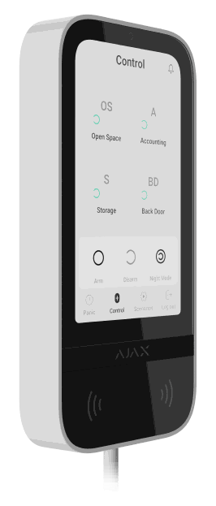

Superior KeyPad TouchScreen Fibra
Réf. fabricant KP.TS.F · Claviers · Ajax Systems, marque partenaire
Sur devisÉtude, fourniture et installation par Active Sécurité 974
Superior KeyPad TouchScreen Fibra : clavier filaire avec écran tactile et autorisation sans contact. Communication : filaire. Matériel Ajax Systems sélectionné, installé et paramétré chez vous par Active Sécurité 974, partout à La Réunion.
- Étude et devis gratuits, sans engagement
- Installation chez vous, partout à La Réunion
- Partenaire agréé Ajax Systems
Caractéristiques
En bref.
Données issues de la fiche officielle du fabricant, reformulées. Fiche constructeur (nouvel onglet)
| Modèle | Superior KeyPad TouchScreen Fibra |
|---|---|
| Référence fabricant | KP.TS.F |
| Gamme | Superior |
| Type | Claviers |
| Points clés |
|
| Coloris officiels | Noir, Blanc |
| Prix | Sur devis |
| Disponibilité | À confirmer lors du devis |
Dans la même famille
Autres produits.